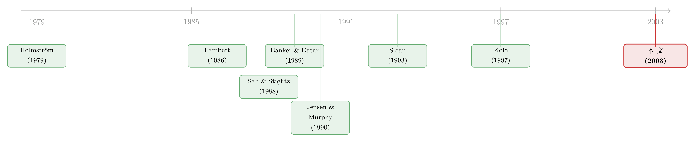

官越大，工资条里的「赌注」就越重
本文读的是 Barron & Waddell (2003, Journal of Financial Economics)：作者把标准委托代理模型从「努力多少」拓展到「如何挑项目」，由此预测——职位越高（rank 越靠前），薪酬里挂钩业绩的比例越大、且这部分激励里股权占的比例也越大。用 1992–2000 年逾 1,700 家公司的高管薪酬数据检验，结论稳稳成立：从公司最底层升到最高层，预测的激励薪酬占比上升 49.1%，激励里的股权占比上升 70.9%。
1 一个被「努力」二字盖住的问题
关于 CEO 薪酬的研究汗牛充栋。从 Jensen and Murphy (1990) 在 JPE 上那篇被反复引用的文章，到 Hall and Liebman (1998) 用 478 家大公司数据给出的「相反」证据，人们已经把「薪酬到底和业绩挂不挂钩」这个问题翻来覆去地问了二十年。
但是，几乎所有这些模型，都把一位高管的全部作为，浓缩成了一个变量：努力 (effort)。努力越多，公司业绩越好，但对高管而言越费劲。既然努力不可直接观察，最优合约就把报酬挂到一系列「努力的信号」上去；而高管的风险厌恶，又限制了报酬能在多大程度上绑死在这些有噪声的信号上。这套框架优雅、好用，统治了整个领域。
可它漏掉了一件事——高管真正在做的，不是「使劲」，而是「做决定」。
招不招这个外包商？要不要上这条新产品线？这份营销方案通过还是毙掉？高管每天面对的，是一个个「接受还是拒绝」的项目。在这个语境里，公司价值不只取决于他「花了多少力气把信息搞清楚」，还取决于他「拿到信息后，用一把多严的尺子去筛项目」。换句话说，高管的行动是多维的：既有努力维度，也有决策标准 (decision criteria) 维度。
于是一个自然的问题浮出水面：当我们承认高管在「挑项目」而不只是「使劲」时，关于薪酬该长什么样，标准模型没说清的东西，会不会自己冒出来？
Barron and Waddell (2003) 的回答是：会，而且冒出来的恰恰是那个被实证文献反复观察、却一直缺少理论解释的现象——职位等级 (executive rank)。
2 模型：把「挑项目」写进委托代理
我们顺着论文一步步搭这个模型。它不长，但每一块都为最后那个反转埋了伏笔。
2.1 项目、两类错误与「资历」的定义
设公司有 \(n\) 个按资历排序的高管职位，\(r=1,\ldots,n\)，\(r\) 越小职位越高。每位高管评估一个项目，项目非好即坏：好项目的净现值高于维持现状，坏项目则低于现状。记位于第 \(r\) 级的高管采纳好项目、采纳坏项目、维持现状时给（风险中性的）股东带来的净现值分别为 \(V^G_r\)、\(V^B_r\)、\(V^0_r\)，且
$$V^G_r > V^0_r > V^B_r.$$
令 \(\alpha_r\) 为项目是好项目的（外生已知）概率。
高管会犯两类错误。借用 Sah and Stiglitz (1988) 的术语：把好项目当成坏的拒掉，是第一类错误 (type 1 error)；把坏项目当成好的接下来，是第二类错误 (type 2 error)。论文对「资历更高」给了一个精确定义——
所谓「更高级的职位」，就是犯错代价更大的职位：拒掉好项目的损失 \((V^G_r - V^0_r)\) 更大，接下坏项目的损失 \((V^0_r - V^B_r)\) 也更大。这就是「更重要的决策」一词的全部含义。
2.2 信号、努力与决策标准
高管评估项目时，得到一个关于项目真实价值的、有噪声的信号 \(s\)。若项目是好的，\(s\) 抽自正态分布 \(F_G\)，均值 \(\mu_G\)、精度 \(P_r\)；若是坏的，则抽自 \(F_B\)，均值 \(\mu_B\)、精度 \(P_r\)（精度是方差的倒数）。好项目倾向于给出更高的信号，即 \(\mu_G > \mu_B\)。
关键在于：努力能买来更高的信号精度。令 \(P_r = f(e_r)\)，且 \(f'(e_r)>0\)、\(f''(e_r)\le 0\)——多花力气，信号更清晰，但边际递减。
拿到信号后，高管用一个保留信号 (reservation signal) \(\hat{s}_r\) 当门槛：\(s>\hat{s}_r\) 就上，否则就毙。门槛 \(\hat{s}_r\) 抬高，第一类错误（拒掉好项目）变多，第二类错误（接下坏项目）变少。这个 \(\hat{s}_r\) 的选择，就是前面说的「决策标准」。
于是，位于第 \(r\) 级的高管，给股东带来的期望价值是
$$E(V_r(e_r,\hat{s}_r)) = \alpha_r V^G_r + (1-\alpha_r)V^0_r - \alpha_r F_G(e_r,\hat{s}_r)(V^G_r - V^0_r) - (1-\alpha_r)\bigl(1-F_B(e_r,\hat{s}_r)\bigr)(V^0_r - V^B_r).$$
读法很直观：前两项是「first-best」的理想产出，后两项分别是第一类、第二类错误造成的折损。
最优门槛（first-best）有个漂亮的闭式解：
$$\hat{s}^*_r = \frac{-\ln\bigl((\alpha_r/(1-\alpha_r))\,\Phi_r\bigr)}{P_r(\mu_G - \mu_B)} + \frac{\mu_G + \mu_B}{2}, \qquad \Phi_r = \frac{V^G_r - V^0_r}{V^0_r - V^B_r},$$
其中 \(\Phi_r\) 是两类错误损失之比。论文特意指出一个简化情形：若好坏项目的期望增益与损失对称，即 \(\alpha_r(V^G_r-V^0_r)=(1-\alpha_r)(V^0_r-V^B_r)\)，则 \(\Phi_r\) 那一项消失，最优门槛简化为 \(\hat{s}^*_r = (\mu_G+\mu_B)/2\)，且与努力水平无关。这个「对称假设」不是为了好看——它让分析能聚焦在努力这一维上，是后面推导的脚手架。
2.3 两把尺子量同一个人
股东看不见高管的努力和决策标准，只能用「信号」去推断。论文给了两个相互独立的不完美信号。一个是公司整体业绩 \(V\)；另一个，是从内部会计数据里提取的、专属于这位高管项目的会计业绩指标 (accounting-performance measure) \(A_r\)：
$$A_r(e_r,\hat{s}_r) = E(V_r(e_r,\hat{s}_r)) + w^V_r \varepsilon^V_r + w^A_r \varepsilon^A_r.$$
为什么要两把尺子？因为公司整体业绩 \(V\) 这把尺子「脏」：它混进了其他 \(n-1\) 位高管的项目结果，还混进了与所有人都无关的市场波动。而专属会计指标 \(A_r\) 虽然也有噪声，却不受别人项目和大盘的污染。
薪酬合约因此是线性的三段式：
$$C_r = d_r + b^A_r A_r + b^V_r V,$$
底薪 \(d_r\) 之外，\(b^A_r\)、\(b^V_r\) 分别是挂在会计指标与公司价值上的权重。
2.4 核心方程：确定性等价里的三笔账
整个模型的张力，都压缩在高管的确定性等价 (certainty equivalent) 里。这是我们要重点拆解的一个方程：
股东要付给高管的期望薪酬（第一笔），必须同时补偿他的努力之苦（第二笔）和承担风险之苦（第三笔）。这是委托代理的老剧本。真正不一样的，藏在 \(\sigma_r^2\) 里。
2.5 真正关键的一步：努力会「反噬」风险
薪酬方差 \(\sigma_r^2\) 展开如下：
$$\sigma_r^2 = (b^A_r + b^V_r)^2 (w^V_r \sigma^V_r)^2 + (b^A_r)^2 (w^A_r \sigma^A_r)^2 + (b^V_r)^2 \left[\sum_{j\neq r}(w^V_j \sigma^V_j)^2 + (w^M \sigma^M)^2\right].$$
注意第一项里的 \((w^V_r \sigma^V_r)^2\)。这是这位高管自己项目的内生不确定性。而它，会被努力压下去。
直觉是这样的：努力提高了信号精度，高管就更少犯那两类错误；更少犯错，不只抬高了项目的期望价值（\(\partial E(V_r)/\partial e_r>0\)），还收窄了项目结果的方差——也就是说，很可能 \(\partial(\sigma^V_r)^2/\partial e_r<0\)。
于是反转出现了：在标准模型里，激励是「努力」与「风险」之间的纯权衡，给高管加激励就得给他塞进更多风险，风险厌恶因此拖了激励的后腿。可一旦把「挑项目」写进来，努力本身就能给风险厌恶的高管减负——他多花的力气，既赚了期望，又削了波动。这是 Lambert (1986) 那种「努力是 0/1 选择」的设定里看不到的新机制：在那里，努力要么不做、要么做一份固定的量，根本谈不上「努力如何连续地改变风险」。
一句话：这篇论文让「努力」第一次有了双重身价——它不只是成本，也是高管手里的一台降噪机。这正是后面所有等级预测的发动机。
3 从模型到一条可检验的假设
把一阶条件解出来，并对几个尺度因子做出「随项目/公司价值递增且凹」的设定后，论文得到了股权激励占总激励比例的表达式：
$$\frac{b^V_r\,E(V)}{b^A_r\,E(A_r) + b^V_r\,E(V)} = \frac{(\sigma^A_r)^2}{(\sigma^A_r)^2 + \sum_{j\neq r}\bigl(E(V_j)/E(V)\bigr)(\sigma^V_j)^2 + (\sigma^M)^2}.$$
这个式子和 Banker and Datar (1989)、Sloan (1993) 的结果一脉相承，但有三点不同：它说的是「挂在两个指标上的期望薪酬之比」而非「权重之比」；它假设两个指标的误差零协方差，因而更干净；最重要的是，它在分母里多出了 \(\sum_{j\neq r}(E(V_j)/E(V))(\sigma^V_j)^2\) 这一项——别人项目的不确定性。一个高管层级越低、其个人项目相对整个公司越微不足道，公司整体业绩这把尺子对他就越「脏」，于是股权（挂钩 \(V\)）就越不该用。
接着，一个自然的推论是关于资历的。前面定义过：更资深的职位，犯错代价更大。代价越大，股东就越想让他多花力气把信息搞清楚，因此越愿意给他更强的激励。于是有了全文的核心命题：
假设 1（Hypothesis 1）：越资深（\(r\) 越小）的高管，薪酬中激励部分的占比越高。
而且——更资深的职位不只是因为「要他更卖力」才付得多，也因为这份激励附带了更大的风险敞口，需要额外补偿。
这一步把一个抽象的代理模型，落到了一个谁都能在组织结构图上指出来的变量：你坐在第几把交椅。
4 数据与识别：用职位等级当「实验」
论文检验三组预测：公司规模、研发 (R&D) 投入、股权回报波动率，以及——重头戏——高管职位等级，如何影响激励薪酬的强度与其中股权的占比。
数据上，作者用了 1992–2000 年间每年逾 1,700 家公司的高管年度薪酬数据，覆盖 Fortune 500 与非 Fortune 500 公司。这本身就是对 Kole (1997) 的一次「升级复检」：Kole 用的是 1980 年 371 家 Fortune 500 公司「事前可授予何种股权」的契约条款；而本文看的是二十年后、上千家公司「事后实际怎么发」的薪酬。
识别这件事上，本文最巧的地方，是它两种方法并用：
- 横截面回归告诉你「不同职位的人，薪酬结构有没有系统差异」；
- 但横截面有个老毛病——坐在高位上的人，本来就和坐在低位上的人不一样（能力、行业、公司禀赋都可能不同）。于是作者祭出固定效应 (fixed-effect) 模型：盯住同一个人在同一家公司内部随时间的升迁，看他往上爬时薪酬结构怎么变。这一步把「人」和「公司」的不可观测异质性吸收掉了，剩下的变化就更接近「等级本身」的因果效应。
5 主要结果：官越大，赌注越重
结果几乎是教科书式的干净。
横截面上，最高职位的高管，每一美元薪酬挂钩各类业绩指标的概率，比第五级职位的高管高出 30.3%。也就是说，越往上，工资条里「保底」的成分越少，「下注」的成分越多。
而固定效应的结果更有说服力，因为它追的是同一个人的升迁轨迹：
在同一家公司内部，从本文样本的最低层升到最高层，
- 预测的「总薪酬中激励薪酬占比」上升 49.1%；
- 预测的「激励薪酬中股权占比」上升 70.9%。
两个数字，对应模型的两个层次：升迁不仅让你的薪酬更「激励化」（假设 1），而且让这份激励更「股权化」（来自那个股权占比表达式）。考虑到 Hall and Liebman (1998) 记录了 1990 年代初股权薪酬的爆发式增长，而本文证明这一趋势一路延续到了 2000 年——这套等级解释来得正是时候。
6 文献脉络
这条线的源头，是 Holmström (1979) 奠定的道德风险与可观测性框架：当努力不可见，最优合约就在「激励」与「保险」之间走钢丝。随后，两条支流汇了进来。
一条是「业绩指标该怎么挑」。Banker and Datar (1989) 给出了多信号线性聚合的敏感度—精度准则，Sloan (1993) 则把它落到「会计盈余 vs. 市场业绩」在高管薪酬中的相对权重上——本文的股权占比公式，正是站在这两篇的肩膀上。
另一条，是「高管到底在做什么」。Lambert (1986) 第一个把高管的角色设成「评估并选择有风险的项目」，但他的努力是 0/1 的；而 Sah and Stiglitz (1988) 关于委员会、层级与多头政体的分析，贡献了「第一类/第二类错误」这套语言。本文把这两条支流接上 Holmström 的主干：让努力连续地改变项目的精度，从而连续地改变薪酬的风险——这是它最实质的理论增量。
实证这边，Jensen and Murphy (1990)、Kole (1997)、Bushman et al. (1996)、Ittner et al. (1997)、Core and Guay (1999) 各自刻画了薪酬—业绩关系的某个侧面，却都没正面回答「为什么不同层级的高管，薪酬结构系统地不同」。本文用「职位等级」这个变量，把理论与实证两端缝在了一起。

（关于「把资本预算和工资条放进同一道代理题」，可参见《好项目，凭什么自己说了算？》；关于「债务如何堵住老板偏爱模糊项目的暗路」，可参见《老板为什么偏爱「说不清」的项目？》。）
7 评论与延伸（Q&A + 研究方向）
(a) 几个可能的疑问
Q：这和「股票还是期权」那类道德风险模型有什么不同？
那类模型（如 Stocks or options）问的是「用哪种工具激励既定的努力」。本文则更进一步：它让高管不只选努力，还选决策标准（保留信号 \(\hat{s}_r\)）。这把「激励可能扭曲决策标准」这件事显式地写了进来——薪酬不只要诱出努力，还不能把高管的筛选门槛拉离股东的最优门槛。
Q：固定效应真能识别出「等级的因果效应」吗？
它解决了「人」和「公司」层面不随时间变的异质性——这是横截面比较的最大威胁。但它没解决升迁本身的内生性：一个人被提拔，往往恰恰因为他表现好、或公司进入了某种新阶段，而这些可能同时改变薪酬结构。fixed-effect 吸收的是水平差异，不是「升迁这个事件」携带的时变冲击。所以
49.1%、70.9%更应读作「升迁伴随的薪酬结构变化」，而非纯净的等级处理效应。
Q：那个「努力能降低风险」的机制，有被直接检验吗？
没有。这是模型的核心引擎（\(\partial(\sigma^V_r)^2/\partial e_r<0\)），但实证部分检验的是它的下游推论（等级 → 激励强度、股权占比），并没有直接量出「高管努力如何压低了薪酬方差」。这是理论与证据之间一道没有填满的缝。
Q：把「对称假设」请进来，会不会太省事了？
对称（期望增益 = 期望损失）让最优门槛与努力脱钩，从而把分析锁定在努力一维上。这是为了可解性付出的代价。一旦放松，决策标准 \(\hat{s}_r\) 会随努力联动，激励对「门槛扭曲」的影响就会回来——而那恰恰是这个框架最有意思、却被暂时搁置的一面。
Q：为什么要用一个「专属会计指标」\(A_r\)，而不是只用股价？
因为股价这把尺子混进了别人的项目和大盘噪声。模型里，越是低层级的高管，其个人项目相对整个公司越小，股价对他就越「不灵」（分母里那项 \(\sum_{j\neq r}(\cdot)\) 越大）。这正是「为什么高层更该拿股权、低层更该拿会计奖金」的数理根源。
Q：30.3% 和 49.1% 为什么差这么多？
前者是横截面比较（最高 vs. 第五级，跨人跨公司），后者是同一人同一公司内部从最底升到最顶的跨度。后者的「等级跨度」更大、且剥掉了异质性，量级更大并不矛盾——它们度量的是两件不同的事。
(b) 几个可能的研究问题与提案
1. 把「努力降低风险」这台发动机直接量出来
【经济故事】本文的全部新意都押在 \(\partial(\sigma^V_r)^2/\partial e_r<0\) 上，却没人去直接验证它。若能找到一个努力/信息投入的代理变量（如尽调强度、内部审计频率），看它是否真的同时抬高了项目期望并压低了结果方差，就能给这套理论补上最关键的一环。 【可行性】中。难在「努力」和「项目结果方差」都难观测；需要项目层级的内部数据，多见于单一行业的案例研究而非大样本。
2. 升迁事件研究：把等级的内生性逼到墙角
【经济故事】用「同一人因外生原因（如上级猝然离任、并购后重组）被提拔」这类准自然实验，对比内生晋升与外生晋升后的薪酬结构变化，能把「等级效应」从「升迁所携带的时变冲击」里剥出来。 【可行性】中高。ExecuComp 加上 CEO/高管更替数据库可做；识别的关键是找到足够多「与个人业绩无关」的提拔冲击。
3. 把这套等级逻辑搬到债权人那一侧
【经济故事】本文只谈股东如何用薪酬激励高管挑项目。但更资深高管的「项目选择」恰恰最影响公司的违约风险——他们对第二类错误（接下烂项目）的容忍度，直接关系债权人。债务契约（covenant 强度、到期结构）会不会随高管层级的「赌性」而系统调整？ 【可行性】中。需把高管薪酬数据与公司债发行/契约数据匹配；识别可借助高管更替带来的薪酬结构变化作为冲击。这一方向与本博客关注的公司债/信用市场天然契合。
4. 外资持有人会改写这条等级—激励曲线吗？
【经济故事】不同类型的大股东（外资机构、本土机构、家族）对「高层该不该重仓股权」可能有不同偏好。若外资持股提高了对股权激励的需求，那么本文那条「越高层越股权化」的斜率，应在外资持股高的公司里更陡。 【可行性】中。需跨国/跨公司的机构持股数据（如 FactSet/13F 与各国持股库）与高管薪酬匹配；难点是外资持股本身的内生性，需可投资度变更之类的外生冲击。
参考文献
Banker, R., Datar, S. (1989). Sensitivity, precision, and linear aggregation of signals for performance evaluation. Journal of Accounting Research 27, 1113–1130.
Barron, J.M., Waddell, G.R. (2003). Executive rank, pay and project selection. Journal of Financial Economics 67(3), 305–349.
Bushman, R.M., Indjejikian, R.J., Smith, A. (1996). CEO compensation: the role of individual performance evaluation. Journal of Accounting and Economics 21, 161–193.
Core, J., Guay, W. (1999). The use of equity grants to manage optimal equity incentive levels. Journal of Accounting and Economics 28, 151–184.
Hall, B.J., Liebman, J.B. (1998). Are CEOs really paid like bureaucrats? Quarterly Journal of Economics 113, 653–691.
Holmström, B. (1979). Moral hazard and observability. Bell Journal of Economics 10, 74–91.
Jensen, M.C., Murphy, K.J. (1990). Performance pay and top-management incentives. Journal of Political Economy 98, 225–264.
Kole, S.R. (1997). The complexity of compensation contracts. Journal of Financial Economics 43, 79–104.
Lambert, R.A. (1986). Executive effort and the selection of risky projects. Rand Journal of Economics 17, 77–88.
Sah, R.K., Stiglitz, J.E. (1988). Committees, hierarchies and polyarchies. Economic Journal 98, 451–470.
Sloan, R.G. (1993). Accounting earnings and top executive compensation. Journal of Accounting and Economics 16, 55–100.